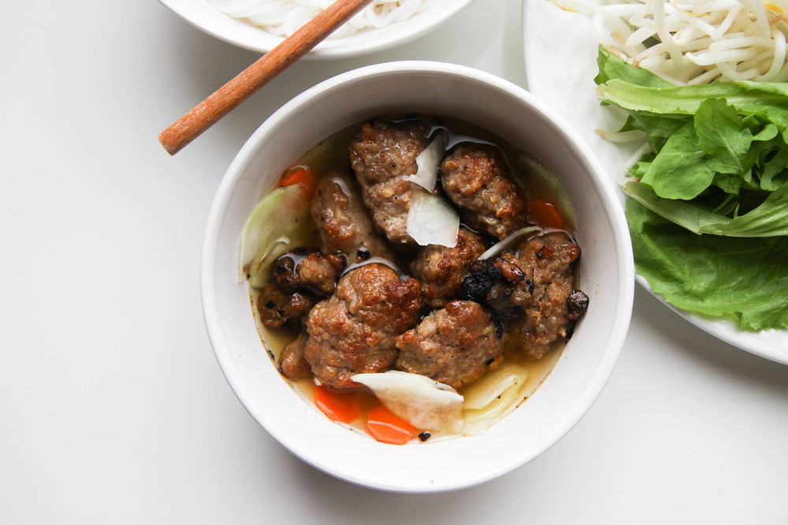

Bun Cha's Recipe

My favorite Vietnamese dish of all time is Hanoi-Style Rice Vermicelli with Grilled Pork, also known as Bun Cha Hanoi in Vietnam. It's a dish that I can never get enough of. It's a refreshing and light dish, made up of rice noodles (bun), pork patties (cha), and thinly sliced fatty pork shoulder. Some awesome restaurants even add in grilled shrimp in the mix. Much kudos to those restaurants! The noodles and pork are eaten with fresh Vietnamese herbs and a sweet chili sauce. The best part is the charcoal-grilled pork. The garlic and shallot-marinated pork on a charcoal grill is enough to stop you in your tracks and make you giddy like a little school girl.
Source: vickypham.com
INGREDIENTS
- 1 lb ground pork
- 1 lb pork shoulder (slice thin against the grain)
- 3 tablespoons fish sauce
- 2 tablespoons oyster sauce
- 2 teaspoons homemade caramel cooking sauce (Nuoc Mau) or 1/2 teaspoon thick soy sauce
- 1 tablespoon chicken stock powder or vegetable stock powder
- 2 tablespoons granulated sugar
- 1/2 teaspoon ground pepper
- 1/4 cup minced lemongrass
- 1 tablespoon minced garlic
- 2 cups sliced unripe green papaya
- 2 teaspoons salt
- 1 cup hot water
- 3/4 cup granulated sugar
- 3/4 cup fish sauce
- 3 tablespoons lime juice (1 fresh lime)
- 2 cups coconut soda (Coco Rico)
- 6 minced garlic cloves
- 2 Thai chili peppers (slice thin)
- Assorted vegetables (lettuce, bean sprouts, mint, perilla, and/or sliced cucumber)
- 2 bags rice vermicelli (Jiang Xi rice stick or Bun Giang Tay)
- Pickled daikon and carrot (optional)
INSTRUCTIONS
- To make the pork marinade, combine fish sauce, oyster sauce, caramel cooking sauce/thick soy sauce, pork/vegetable stock powder, sugar, ground pepper, lemongrass and garlic. Mix well. Divide marinade between the ground pork and sliced pork shoulder. Marinate the pork for at least 30 minutes or overnight in fridge for better flavor.
- Roll the ground pork into small patties.
- Grill the sliced pork and patties over charcoal fire for a more authentic taste. You can also bake them in the oven at 400°F for about 10 minutes. Make sure to flip and rotate for even cooking.
- To make the dipping sauce, in a small bowl, combine the sliced papaya and salt. Let sit for at least 30 minutes. Rinse the salt off under cold running water and squeeze out excess water. Drain dry and set aside. In a medium-size bowl, mix together water and sugar until dissolved. Add fish sauce, lime juice, coconut soda, garlic and chili peppers. Add sliced papaya to sauce.
- Cook the noodles per package instructions.
- To serve, add a single portion of meat to a small bowl. Add the sweet papaya chili sauce on the meat. Serve with a side of rice noodles and platter of fresh Vietnamese vegetables and herbs.